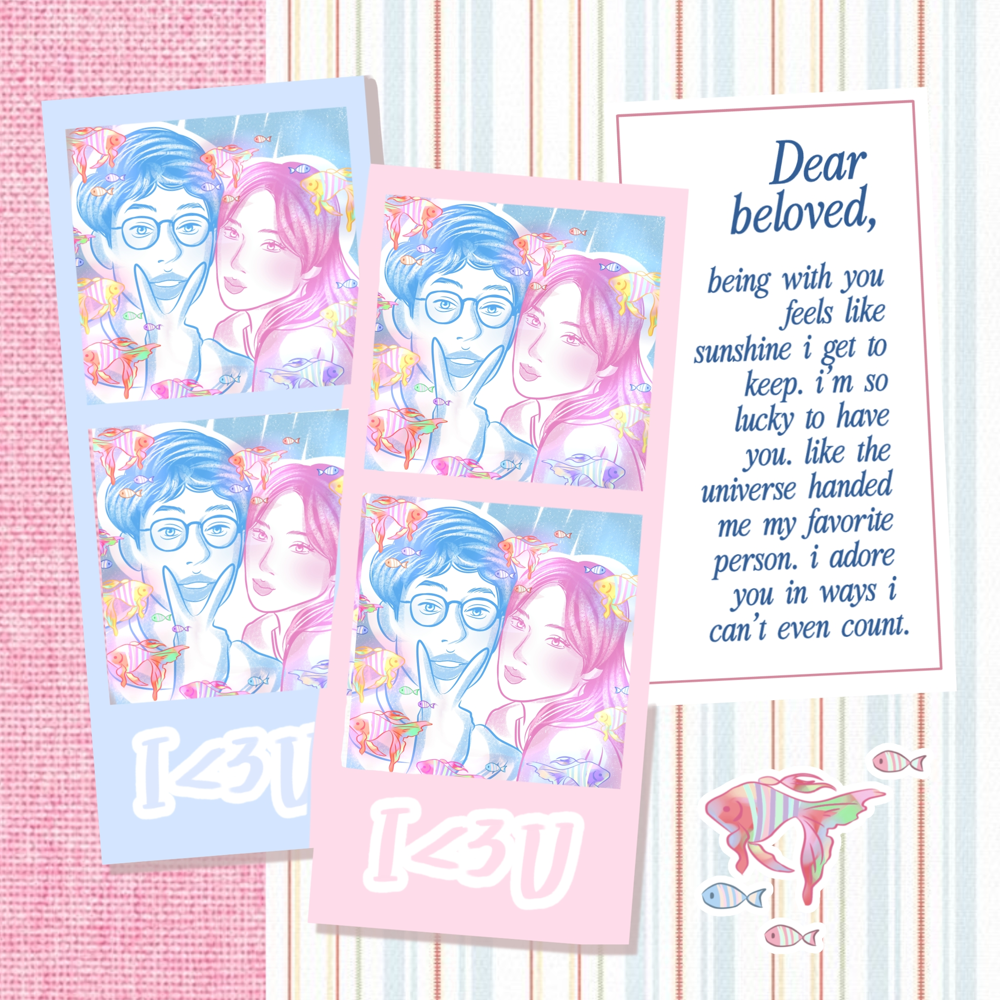

Rekah lily di depan jendela mewangi sekali harumnya.. semilir angin mencumbu suraiku yang menari nari di antara sukacita. Burung burung tertawa di balik rindang kehijauan pepohonan dan aku turut menerka nerka. Bagaimana semesta akan mendekap di hari luar biasa jelita kita? Alunan sangkala mengudara mengiringi banyak bait kenangan yang tiada cacat celanya, perihal kita yang saling mencinta begitu mesra selayak berada di puncak surgawi fana. Namun nyata rasanya, sungguh terbuai dengan segala afeksimu yang selayak candu teruntuk tentramku setiap harinya. Maka, betapa aku mampu bersimpuh mengucap syukur terhadap Sang Esa, karena memahat hadirmu begitu mulia. Terlampau ingin selamanya kita menjelma menjadi puspa di tengah buruk rupa dunia.
Didekap gemintang kala kita berkelakar ria menyapa bait baru, alkisah merah muda merona kita lainnya. Menjejaki hitam putih takdir selama nyaris dua ratus delapan puluh hari, oh beruntungnya aku membersamaimu dengan genggam tangan yang selalu hadir hangatnya. Doa tulusku terbang di tengah lembayung senja, sungguh sumpah mati aku ingin kita abadi sepanjang masa. Saling mengurai lara dan mencipta cinta. Tiada lain inginku selain agar larik kita senantiasa diberkati Sang Pencipta. Aku ingin mendamba nyawamu sedalam dalamnya palung laut biru di ujung dunia, atau mengasihi sukmamu selama lamanya Adam menemukan Hawanya.
Namun, barangkali mencintai seseorang tidak pernah sesederhana menyusun doa tentang selamanya. Di balik segala ingin yang kutitipkan pada langit, selalu ada cemas yang diam-diam ikut tumbuh: tentang kemungkinan kehilangan, tentang tangan yang suatu hari mungkin memilih melepaskan, tentang seseorang yang pernah berjanji tinggal tetapi akhirnya menemukan alasan untuk pergi. Dan dari segala ketakutan itu, ada satu pertanyaan yang paling sering kembali mengetuk kepalaku
Apakah mencintaiku memang terlalu berat hingga kau pilih menyerah?
Sejujurnya, melihat orang lain begitu mudah dicintai dan dipeluk utuh, membuatku bertanya pada cermin: “Cacat mana di ragaku yang membuat kekasihku tak pernah benar benar yakin?”.
Aku kerap berdiri mematung di hadapan sunyi, mengeja tiap tiap remuk di dada sembari bertanya tanya: Memangnya aku ini kenapa? Cacat seperti apa yang kubawa, hingga kau tak pernah menanamkan rasa mantap menetap?
Apakah ragaku memang sulit untuk dicintai?
Terima kasih ya kasihku, sudah ratusan hari mencintaiku dan menyayangiku. Serta jutaan waktu yang kau berikan padaku. Bagiku, mencintai itu meluangkan waktu.. Bukan menunggu jadwal senggang, melainkan sengaja menepi dari riuhnya dunia hanya untuk mendengar cerita manismu.
Meletakkan ponsel, menatap matamu, dan membiarkan dunia luar berjalan sendiri.
Sebab bersamamu, aku tidak pernah merasa sedang membuang waktu. Aku sedang menikmati hidup.
Aku mengingat hal hal kecil tentangmu, mendengarkan cerita ceritamu, mengkhawatirkanmu ketika kau lelah, menunggumu ketika kau sibuk, dan selalu berusaha menjadi tempat yang tenang ketika harimu terasa berat. Bukan karena aku sedang membeli tempat di hidupmu..
Aku hanya ingin.. selama aku masih menjadi bagian dari harimu, kau tidak perlu bertanya tanya apakah ada seseorang yang sungguh sungguh peduli kepadamu.
Sebab aku mencintaimu bukan dengan harapan kau akan selalu tinggal.. Aku mencintaimu karena saat itu, mencintaimu adalah caraku menjaga seseorang yang berarti bagiku, bahkan ketika jarak membuatku tidak bisa selalu berada di sisimu.
Ingatlah aku sebagai seseorang yang pernah menempuh ratusan kilometer hanya untuk melihat senyum di wajahmu, ingatlah aku sebagai seseorang yang rela menunggu hanya untuk beberapa waktu bersamamu. Seseorang yang menyimpan ceritamu, mengingat hal kecil tentangmu, dan tetap ingin mendengar suaramu meski hari itu aku sendiri sedang tidak baik baik saja.
Karena pada akhirnya, kalau aku baik kepadamu, itu bukan supaya kamu mencintaiku.
Aku hanya ingin kau sadar bahwa, selama ini, kamu sedang dicintai.
Jemariku gemulai memuja eksistensimu, begitu perkasa merengkuh detak jantungku yang menyala nyala. Aksara aksara yang sedikit berantakan ini, tidak apa ya mahes? Rusuk kepalaku yang gila ini terkadang sukar melukiskan betapa kasihku total sepenuhnya, mutlak teruntukmu, cinta.
Lalu sayangku, boleh tidak aku memintamu mencintaiku dengan cara yang paling berisik?
Bukan dengan suara yang harus memenuhi seluruh ruangan, bukan pula dengan kata kata yang sengaja kau ucapkan keras keras agar dunia tahu bahwa aku adalah seseorang yang kau pilih. Aku hanya ingin sekali, untuk satu kali saja, merasakan bagaimana rasanya dicintai tanpa harus menebak nebak. Tanpa harus menerjemahkan diam menjadi rindu, jarak menjadi kesibukan, dan pesan yang tak kunjung datang menjadi alasan untuk percaya bahwa barangkali kau masih menyayangiku.
Tanyakan bagaimana hariku, meski jawabanku hanya “biasa saja”. Cintai aku dengan ketukan pintu yang terburu buru di tengah malam, seolah kamu tak sabar ingin menumpahkan seluruh cerita tentang harimu yang riuh dan melelahkan. Cintai aku dengan suara tawamu yang memecah dingin udara subuh, dengan panggilan panggilan tak penting di tengah jam tersibukmu, atau dengan deret kata yang kamu eja keras keras tanpa peduli betapa konyolnya itu bagi orang lain yang melihatnya. Panggil diriku “sayang” berulang kali, sebab apa apa yang keluar dari mulutmu itu seperti mantra penolak sepi, seperti nyanyian yang diputar tanpa henti, dan seolah gema sunyi yang bertahun tahun menetap di sudut sudut batinku menyerah, kehilangan kuasanya, dan akhirnya menyingkir.

Kita, di antara riuh yang kusuka
Aku ingin disiram oleh keberadaanmu yang bising, ditarik paksa keluar dari remang kamar yang selama ini diam diam memelihara air mata, prasangka, dan keraguan atas harga diri yang terus mengikis. Dan, bisakah kamu tinggal sedikit lebih lama ketika melihat mataku mulai lelah?
Aku membutuhkanmu yang riuh, yang tak pernah lelah mengisi sunyi, untuk menenggelamkan suara suara jahat yang kerap berteriak lebih keras didalam kepalaku sendiri. Sebab saat dunia di luar mendadak terlalu hening, pikiranku justru berubah menjadi ruang yang paling berisik dipenuhi ketakutan serta perasaan bahwa aku tak pernah cukup untuk semuanya dan kecemasan yang perlahan menjalar tanpa tau bagaimana caranya berhenti.
Maka berisikmu menjadi semacam penawar.. bukan karena ia mampu menghapus seluruh ketakutan itu, melainkan karena kehadiranmu selalu menjadi pengingat bahwa aku tidak pernah benar benar sendirian. Bahwa ada dirimu diluar sana yang masih ingin berbicara denganku, sementara aku berbaring menatap langit langit kamar yang dingin dan kosong.
Suaramu, langkah kakimu yang tergesa, juga caramu yang begitu bersemangat menceritakan hal hal kecil yang terjadi dalam harimu, barangkali bagi orang lain hanyalah hal sederhana. Namun bagiku, semuanya adalah bukti yang begitu nyata: bahwa aku masih dicari, masih diinginkan, masih dianggap ada. Dan mungkin, keberadaanku di dunia ini masih berarti bagi dirimu.
Jadi, sayang.. tetaplah menjadi suara yang datang untuk merangkai kembali bagian bagian diriku yang sempat tercerai. Jangan kecilkan suaramu hanya karena takut mengganggu, jangan urungkan langkahmu hanya karena jarak terasa terlalu jauh. Datanglah ketika ingin datang, panggil aku ketika ingin mencariku. Sebab aku tahu betapa mudahnya sunyi tumbuh di antara dua manusia ketika terlalu banyak hal dibiarkan tak terucap.
Aku sudah terlalu lama akrab dengan diam. Terlalu lama membiarkan hari hari berlalu tanpa suara yang benar benar ingin tinggal. Maka aku tidak membutuhkan cintamu sebagai sesuatu yang tenang hingga tak terasa keberadaannya. Aku ingin ia hidup. Aku ingin ia punya suara, punya langkah, punya keberanian untuk mengetuk ketika aku mulai menutup diri. Biarlah cintamu menjadi sesuatu yang perlahan mengusik kesepian yang selama ini kubiarkan berdiam di dalam diriku.
Aku ingin mencintai dan dicintai tanpa harus selalu bersikap dewasa. Sesekali, izinkan cinta menjadi sederhana dan sedikit kekanak kanakan tentang seseorang yang tetap mengetuk meski pintunya tertutup, tentang keberanian berkata bahwa ia rindu, tentang mencari tanpa merasa perlu menyembunyikannya di balik gengsi. Aku ingin hubungan yang membuatku merasa pulang, bukan seperti seseorang yang hanya kebetulan diberi tempat untuk singgah.
Mungkin terdengar terlalu manja. Tapi barangkali, begitulah seseorang ketika sudah terlalu lama berjalan sendirian bersama sunyinya. Ia akhirnya hanya ingin dimengerti tanpa harus menjelaskan terlalu banyak.
Aku tidak memintamu untuk memperbaiki segala sesuatu yang pernah rusak di dalam diriku. Luka luka itu tetap menjadi bagian yang harus kupelajari dan sembuhkan dengan tanganku sendiri. Aku juga tidak ingin menggantungkan seluruh alasan untuk bertahan kepadamu. Aku hanya ingin tahu bahwa di antara dunia yang sering terasa begitu bising, masih ada satu tempat yang boleh kudatangi tanpa harus mengenakan wajah paling kuatku. Tempat di mana aku boleh lelah, boleh diam, boleh menjadi diriku sendiri tanpa perlu takut bahwa kelemahanku akan membuatmu memilih pergi.
Sebab aku sudah terlalu letih dengan cinta yang selalu memaksaku menebak nebak. Letih menunggu pesan yang tak kunjung datang sambil menghitung panjangnya jarak di antara satu kabar dan kabar berikutnya. Letih membaca perubahan sekecil apa pun dari caramu berbicara, lalu bertanya dalam diam apakah ada sesuatu yang sedang berubah di antara kita. Rasanya melelahkan ketika aku harus mencari cari jawaban dari seseorang yang seharusnya bisa menjadi tempatku merasa tenang.
Aku ingin mencintaimu tanpa harus terus mengukur. Tanpa menghitung berapa kali aku lebih dulu mendekat, berapa kali aku mencoba meraihmu, atau berapa banyak tanganku yang akhirnya hanya bertemu dengan ruang kosong. Aku ingin mencintai dengan hati yang ringan, tanpa terus-menerus takut bahwa setiap langkah yang kuberikan akan berakhir sia-sia.
Aku ingin cintamu memiliki suara, meski hanya sampai kepadaku. Tak perlu kau pertontonkan kepada dunia, tak perlu pula kau buktikan kepada siapa siapa. Aku hanya ingin sesekali merasakan bahwa aku benar-benar hidup di dalam hatimu. Bahwa di antara doa doa yang kau bisikkan dalam sunyi, namaku pernah kau titipkan di sana. Bahwa dalam rencana rencana sederhana yang kau susun untuk hari hari mendatang, ada keberadaanku yang ikut kau pertimbangkan.
Dan ketika kau membayangkan tentang hari esok, aku ingin percaya bahwa di antara begitu banyak kemungkinan yang menunggu, ada sedikit bagian yang diam diam kau sisakan untukku.
no bad days with a man like this.
Terima kasih karena telah menjelma selayak berkat dewi dewa yang senantiasa melerai kecamuk kepala. Sungguh, kamu tidak akan tahu betapa hadirmu selayak binar permata di tengah pekat duniaku, cinta. Maka, aku akan mencintaimu dari sudut sudut denyut nadiku bahkan hingga belulang tiada lagi melekat di relung tubuhku yang pucat nantinya. Jikalau samudera muak dan mulai menginjaki kesetiaan ombaknya yang menggelung manja, aku tetap di sini, tak tergoyah saja. Jikalau kamu lunglai raganya, percayalah, aku akan tegak mengoyak segala perihal yang merusuhi syair cinta kita dengan pongahnya karena aku sejatinya tanpa kamu ialah selayak butir debu tak kasat mata.
Aku tidak akan kehilanganmu dengan sia sia. Karena aku ialah yang kemarin, dua hari lalu, bahkan beberapa ratus hari lalu yang kamu temui, masih memuja dan mendamba gelak tawa dan lengkung senyummu yang rupawan, sayangku. Meniti asa dengan gelimang rasa yang malu-malu berdetak di rongga dada, kamulah belahan jiwa. Aku milikmu sepenuhnya, hingga layu rusuk rusukku yang mungkin akan kebas nantinya. Jikalau diminta mengucap beribu kali pun aku rela, bahwa aku mencintaimu sebegitunya, cinta.
Terima kasih sudah menjadi bagian dari hari hariku yang begitu berarti. Terima kasih untuk setiap tawa, setiap peluk, setiap pertengkaran kecil, juga setiap kali kita memilih untuk kembali setelah sama sama lelah.
Happy mensive, sayang..
I love you so much more than the miles between us.